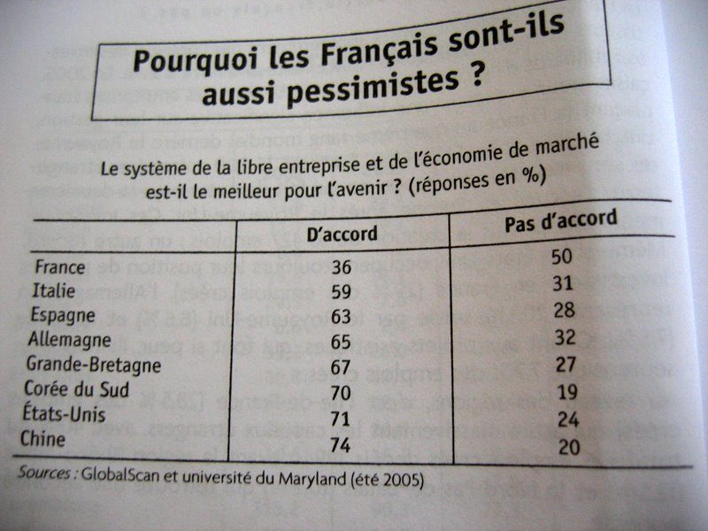
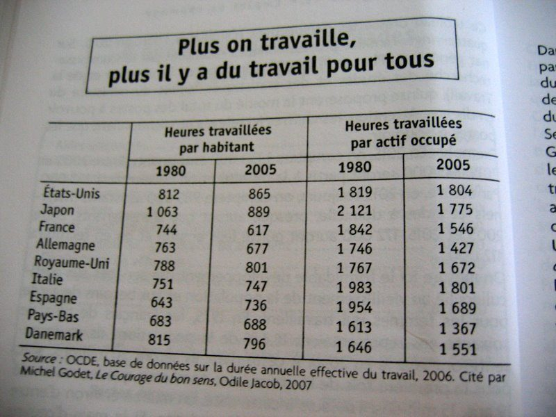

Les bons chiffres de Jacques Marseille
La semaine dernière, je prends l'avion à Orly pour rentrer à Toulouse, et dans ces fantastiques Press Shop où l'on a toujours envie d'acheter 12 revues, je tombe sur le bouquin de Jacques Marseilles, Les bons chiffres pour ne pas voter nul en 2007. Comme j'avais lu un extrait intéressant dans un magazine acheté dans un fameux Press Shop deux jours avant, je me dis, "allez, achat impulsif". Pour 16 EUR, voilà la meilleure lecture que j'ai eue ces derniers temps. Un trajet Paris-Toulouse en avion passé bien vite. Je vous parlerai aussi un de ces jours des dernières autres lectures ...
 Notre ami Jacques Marseille, professeur à la Sorbonne, nous présente des statistiques françaises, européennes et mondiales sur l'éducation, l'emploi, les salaires, la fiscalité, la justice, le logement, etc. Des statistiques intéressantes qui peuvent renverser des idées préconçues.
J'en ai prisses deux au début du bouquin. A l'occasion j'en mettrai peut-être d'autres. Je suis certain que l'éditeur me pardonnera d'avoir pris deux tableaux de support en photo dans le livre (?). Finalement, je fais quand même la promo du bouquin non?
1. Pourquoi les français sont-ils aussi pessimistes?
Notre ami Jacques Marseille, professeur à la Sorbonne, nous présente des statistiques françaises, européennes et mondiales sur l'éducation, l'emploi, les salaires, la fiscalité, la justice, le logement, etc. Des statistiques intéressantes qui peuvent renverser des idées préconçues.
J'en ai prisses deux au début du bouquin. A l'occasion j'en mettrai peut-être d'autres. Je suis certain que l'éditeur me pardonnera d'avoir pris deux tableaux de support en photo dans le livre (?). Finalement, je fais quand même la promo du bouquin non?
1. Pourquoi les français sont-ils aussi pessimistes?

La question: "La libre entreprise et l'économie de marché sont-ils le meilleur système pour construire le futur?" La France refuse ou nie, ce que les autres pays approuvent en grosse majorité. Comme le dit bien Jacques Marseille, quand on est pas d'accord avec la majorité des gens, on a le choix entre crier au génie, ou se poser la question d'être schyzophrène. "Déjà, il y a un siècle, les Français avaient mal compris et mal vécu le passage de la société agricole à la société industrielle. Aujourd'hui, ils vivent mal le passage de la société indiustrielle à la société d'information" . 2. Plus on travaille, plus il y a du travail pour tous

"Les USA, la Grande-Bretagne, l'Espagne et les Pays-Bas font exception à la règle de l'abaissement de la durée légale du travail. [...] Ce sont autant de pays où le chômage a fortement baissé dans les 15 dernières années et où le plein emploi est quasiment atteint"."... pour des populations donnés ayant des niveaux de productivité comparables, le niveau de vie par habitant dépend d'abord du nombre d'heures travaillées. C'est dire le formidable potentiel de la France".A méditer ... Patrice.
Commentaires 6
Saint Saens, 2007-02-24 06:30
La France, en 1789, avait un avis radicalement différent de tous les autres pays européens... Avions nous tort ?
Patrice, 2007-02-28 04:39
L'exception qui confirme la règle? J'imagine qu'on peut toujours trouver des contre-exemples. Je trouvais l'approche de Jacques Marseille intéressante, mais si forcément très direct dans ses commentaires.
Saint Saens, 2007-02-28 09:21
Une exception ? Je ne sais pas, cela mérite un débat, mais un débat conceptuel, philosophique, se basant sur des valeurs et non des chiffres... Une piste toute fois : une minorité peut avoir raison contre tous les autres, N. Copernic en savait quelque chose, les arguments de J. Marseille témoigne d'une certaine paresse intellectuelle. Son approche "économisante" est donc fondamentalement erronée et ses propositions irrecevables.
patrice.roulive, 2007-03-03 04:44
Je suis d'accord sur l'approche économisante, mais pas sur la paresse intellectuelle. L'approche "économisante" n'est pas erronée et on ne peut pas trancher que les propositions sont de fait irrecevables. C'est une approche comme une autre, qui peut être utilisée. C'est tout l'intérêt des débats, ils mélangent les avis et les approches. Ce n'est effectivement pas parce qu'un système est utilisée par 99% des gens, qu'il est forcément, le meilleur, le seul ou l'unique. Je pense que le point de J. Marseille sur l'économie de marché est plus de dire que le français est peut-être plus enclin à vouloir se mettre en marge ou à se considérer différent. Est-ce bien ou mal? Ca dépend des moments certainement.
gilbert barnoin, 2008-04-17 23:37
Le français est dit "réputé pour travailler vite et bien", il n'y aurait donc aucune nécessité de le faire travailler autant que les autres peuples pour un même "rendement". Il faut remarquer que,de la plus petite entreprise à la plus grande ,depuis 1946 ,lois sociales aidant ,les entrepreneurs se sont mécanisés .Un artisan en France , est plus productif avec un nombre d'employés identique à celui nécessaire aux autres pour cette raison : parce qu'il a appris à faire des économies de personnel ,le coût salarial étant ce qu'il est chez nous .Cela ne veut pas dire que le français ne travaille pas bien ou vite .Mais cela démontre que son record de vitesse est sur-évalué .Le pilote va bien ,mais la machine est performante et bien utilisée .Si vous voyagez aux US ,visitez une petite entreprise,vous serez étonnés du peu de mécanisation ,du nombre élevé de salariés et de leur âge ,souvent important pour se trouver encore au travail .
patrice.roulive, 2008-04-18 00:29
"Un artisan en France , est plus productif avec un nombre d’employés identique à celui nécessaire aux autres pour cette raison : parce qu’il a appris à faire des économies de personnel" On peut donc imaginer le niveau de compétitivité de la France si les charges étaient moins importantes. C'est fantastique. Je suis quand même effaré de lire des phrases comme "Le français est dit “réputé pour travailler vite et bien”, il n’y aurait donc aucune nécessité de le faire travailler autant que les autres peuples pour un même “rendement”.".